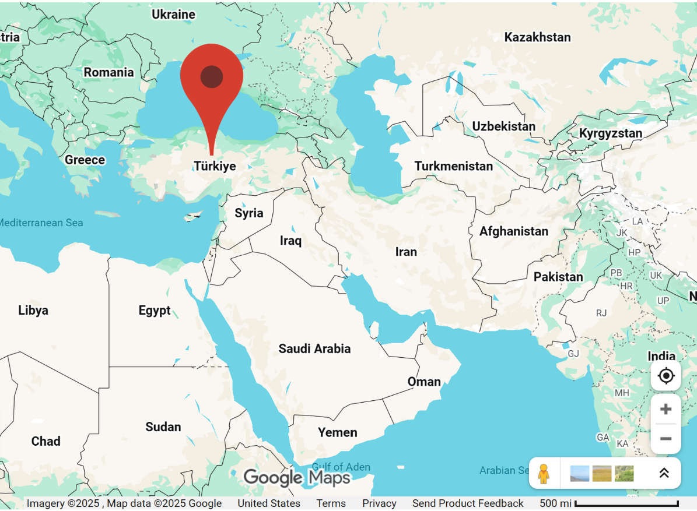
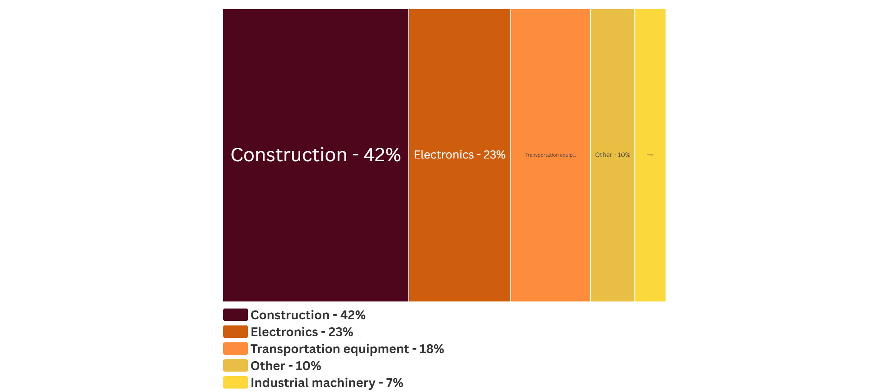

Copper is a naturally occurring metal that has been used since 8000 B.C. It is the third most consumed metal in the world because it is a highly conductive and ductile material.
Today, 2/3 of copper comes from porphyry copper deposits granite and igneous rock that contain copper. Another 1/4 of copper comes from sedimentary copper deposits, which formed after copper chloride brine leached through permeable rocks over the course of millions of years. These deposits also host 60% of the world's cobalt. [1][2][3][4]
From USGS Global Copper Map
Where was copper discovered?
Copper metallurgy was first recorded in 8000 B.C. in Türkiye.[1]
Screenshot via Google Earth
What is copper used for?
What industries use copper ?
Data from USGS National Minerals Information Center 2025
How much copper has been mined?
Cumulative Copper Mined by Country in Metric Tons
Data from British Geological Survey Mineral Commodity Reports 1493-1900, US Geological Survey Mineral Commodity Reports 1913-2019

*Data Warning: Production data [MT] reported under former states were manually reassigned to modern territories to the best of the authors’ ability. Some national averages may be overinflated due to limited granularity on where within the former state the material was originally mined.
How is copper mined?
Process Diagram